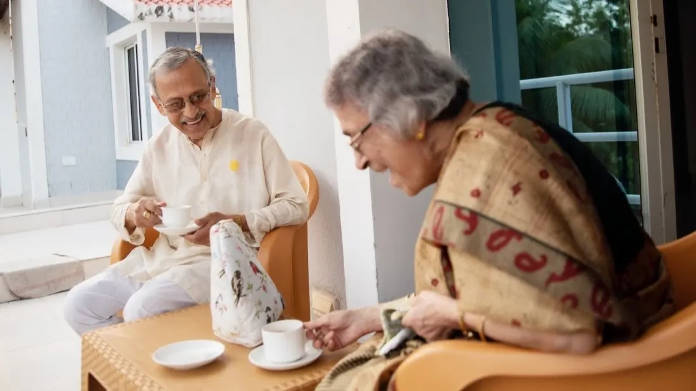

Healthy aging does not depend on one big change — it is built through small, meaningful habits repeated every day.
For seniors, maintaining wellness often comes down to consistency: eating well, moving regularly, sleeping properly, staying connected, and following a steady routine.
1. Start the Day with Structure
A simple daily rhythm helps seniors feel more grounded and energized. Waking up at a consistent time, eating breakfast, and beginning the day calmly can improve physical and emotional balance.
2. Keep the Body Moving
Movement supports circulation, flexibility, mood, balance, and strength. It does not need to be intense to be effective.
- Walking
- Light stretching
- Chair exercises
- Breathing and mobility routines
- Gentle group wellness sessions
3. Eat and Hydrate Well
Proper nutrition plays a major role in healthy aging. Seniors benefit from balanced meals that are easy to enjoy and suited to their health needs.
Hydration
Helps with energy, focus, digestion, and circulation.
Balanced Meals
Supports immunity, strength, and recovery.
Consistency
Eating regularly helps maintain stability and wellness.
4. Protect Sleep and Rest
Rest is essential for healing, emotional health, memory, and overall energy. A calm evening routine and comfortable environment can make sleep more restful.
5. Stay Socially and Mentally Engaged
Wellness is not only physical. Seniors also thrive when they stay mentally active and emotionally connected.
A meaningful conversation, shared activity, or simple daily interaction can brighten an entire day.
Final Thoughts
Healthy aging is about building a life that supports the body, mind, and spirit.
With the right environment and daily habits, seniors can continue living actively, comfortably, and confidently.
Support Senior Wellness Every Day
Discover how Netra Senior Care creates routines and environments that encourage healthy aging.